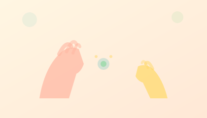

| The signal your child needs to feel is real. Their brain just isn't catching it. Here's the science. |
|
|
The mechanism
What "interoception" actually means for pottyBCBA protocol isn't enough. Here's why. |
|
 |
|
You've done BCBA. You've done OT. You've done social stories, sticker charts, scheduled sits, and picture communication cards. Nothing's fully working — and you're starting to wonder if you missed something fundamental. You haven't missed anything. The piece nobody mentions is interoception. Interoception researcher Kelly Mahler describes this as the "eighth sensory system" — the sense that tells us what's happening inside our bodies. Hunger. Thirst. The need to pee. For most children, that signal arrives clearly. For autistic children, research by Nicholson and colleagues (2019) confirms a reduced ability to sense these internal body signals. The signal is there, but the brain doesn't catch it in time. This is why sticker charts failed: they assume your child feels the accident and remembers the consequence. If the "I need to go" message never reached the brain, there's nothing to connect to the sticker. This is why timed sits failed: your BCBA had your child sit every 90 minutes, but without the internal signal triggering the need, it becomes a waiting game — not a learning process. Your BCBA built the behavioral foundation. That's real work. But the sensory layer is different. One parent I spoke with said it better than I ever could: "She looked down. At the wet. First time. I cried." That moment — the first time the brain registered the body — is what interoception training looks like. It's not about behavior. It's about connection. |
How the Body-Signal Learning Layer worksPull-ups are designed to keep your child dry by wicking moisture away instantly. That's great for sleep. But for learning? That dry feeling is the problem. If the brain never feels "wet," it has no data to learn from. The Body-Signal Learning Layer intentionally preserves a gentle wetness signal for 30-60 seconds — long enough for the brain to register "something happened." Research by Azrin & Foxx (1971) established that sensory awareness of accidents is essential to the learning loop. That principle is the foundation of our design. Simon & Thompson (2006) showed that the type of undergarment a child wears directly affects toilet training outcomes. The underwear isn't passive coverage — it's an active learning tool. This works alongside what your BCBA is already doing. ABA addresses behavior. The Body-Signal Learning Layer addresses sensation. Many BCBAs incorporate sensation-based feedback into protocols once they see results. It's not a replacement — it's the missing piece. |
|
The mechanism is grounded in established research. See how one layer of fabric addresses the interoception gap.
60-day guarantee. Free shipping on bundles. Code WELCOME10 still active. |
|
|
Calm progress, one day at a time. {{business_address}} |
| {{unsubscribe_disclaimer}} |